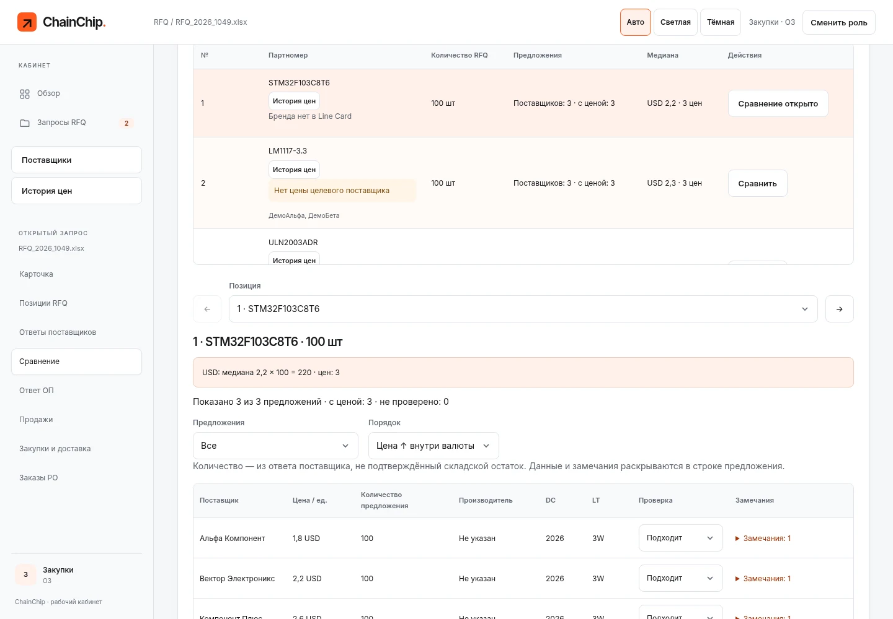
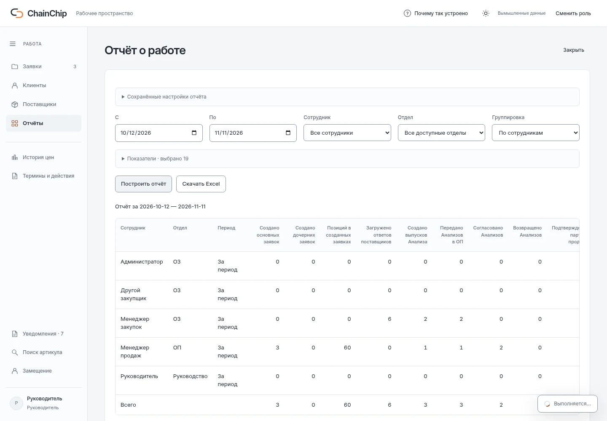

Клиенту — его предложение
КП формируется в PDF без внутренних поставщиков и закупочных цен. Запрошенные позиции сохраняются, включая те, по которым предложения пока нет.
Сравнивайте ответы поставщиков по каждой позиции, согласовывайте цены с продажами и формируйте КП. Передавайте в закупку те количества, которые подтвердил клиент.
Вход по роли, без пароля. Данные учебные. Публичное демо может отличаться от текущего приложения; боевой обмен с МоимСкладом в нём отключён.

Загрузите ответы поставщиков и сравните цену, количество, срок поставки и DC — код даты производства. Для каждой позиции можно выбрать своё предложение и явно отметить аналог.
Каждый этап связан с предыдущим: видно, что запросили, что согласовали и сколько осталось закупить.
Менеджер загружает Excel, проверяет позиции и назначает закупщика. Исходный файл сохраняется.
Менеджер продажЗакупщик собирает ответы и выбирает предложения по позициям.
Менеджер закупокПродажи согласуют Анализ — расчёт предложения клиенту. Из него формируется КП.
Закупки → продажиПосле проверки актуальности закупочной цены менеджер фиксирует подтверждённые позиции и количества. Можно частями.
Менеджер продажЗакупщик распределяет количества по партиям и формирует PO — заказ поставщику.
Менеджер закупокЦены, курс и расчёт сохраняются в версии Анализа. Если условия меняются, требуется новое согласование; ранее выпущенные документы сохраняют прежние значения.
КП формируется в PDF без внутренних поставщиков и закупочных цен. Запрошенные позиции сохраняются, включая те, по которым предложения пока нет.
Анализ можно выгрузить, отредактировать и загрузить обратно. При подходящей форме исходника система также заполняет ответные колонки Excel клиента.
При настроенном и включённом обмене подтверждение продажи запускает создание заказа покупателя. Готовый PO — заказа поставщику и связанного счёта поставщика.
Заказ поставщику связан с заказами покупателей. Сохранённый КП прикрепляется к заказу покупателя, PO — к заказу и счёту поставщика.
В заявке видны остатки и резервы по складам, в том числе по модификациям DC. Можно проверить склад до новой закупки.
Карточки товаров синхронизируются в обе стороны. Неоднозначные соответствия требуют проверки сотрудником.
Для обмена настраиваются организация, склады, налоги и соответствия контрагентов. Приёмки, платежи и отгрузки оформляются в МойСкладе. Отправку КП и PO адресатам выполняет сотрудник.
В отчётах закупок можно найти просроченные заявки, позиции без предложений и открытые проблемы. Посмотреть нагрузку сотрудников и перейти к конкретной заявке.
Закупщик фиксирует причину проблемы. Руководитель помогает найти решение; обсуждение и результат остаются в истории.
В карточке клиента доступны подтверждённые заказы, позиции, количества и клиентские цены. При повторном запросе можно вернуться к документам предыдущих заявок.

Сотрудники работают в браузере. Сервер — C# / .NET 10, данные — SQL Server. Интерфейс написан на JavaScript, HTML и CSS.
В демо выберите роль закупщика и откройте заявку с предложениями.
Сравните ответы, затем переключитесь на роль менеджера продаж.